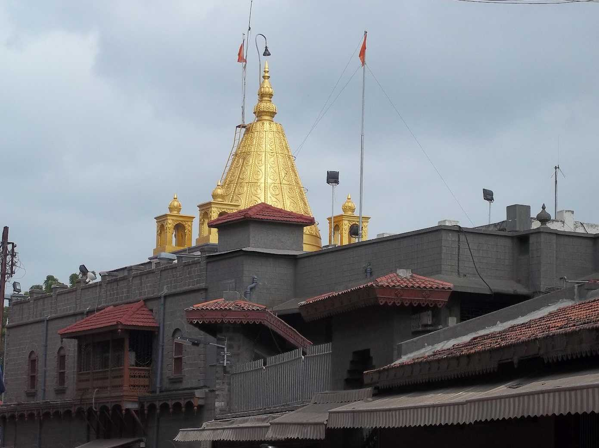
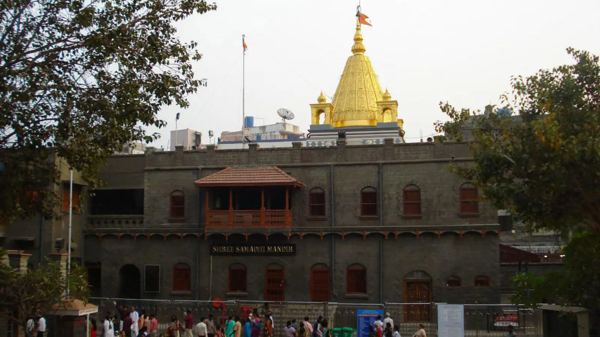
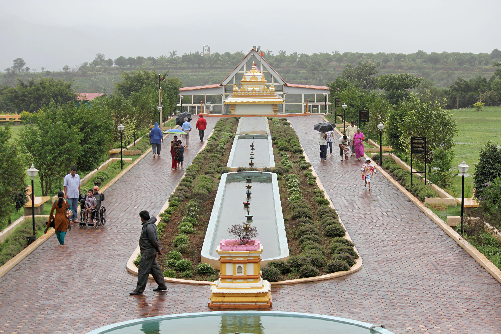
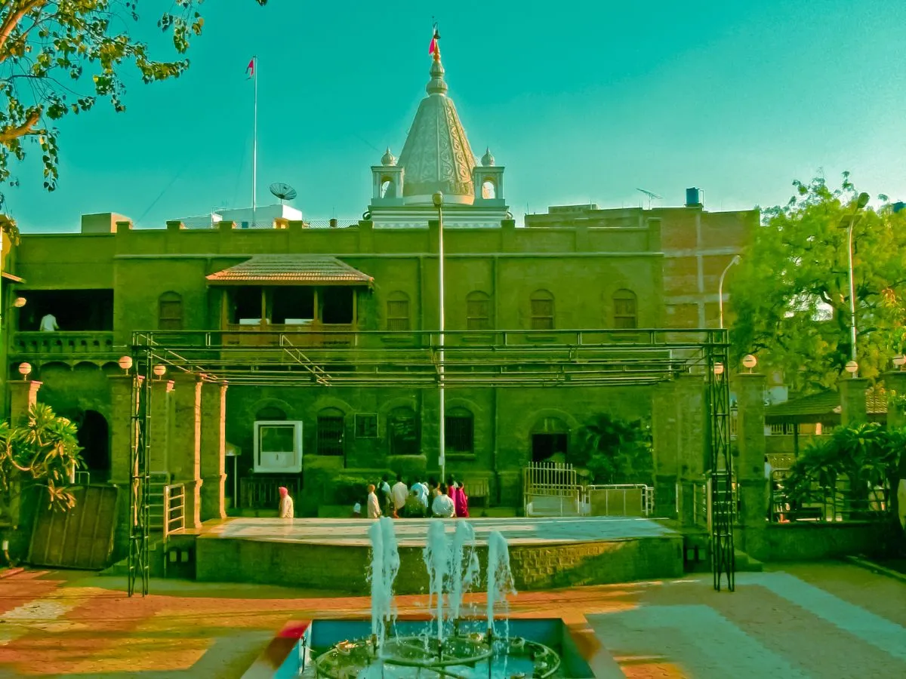
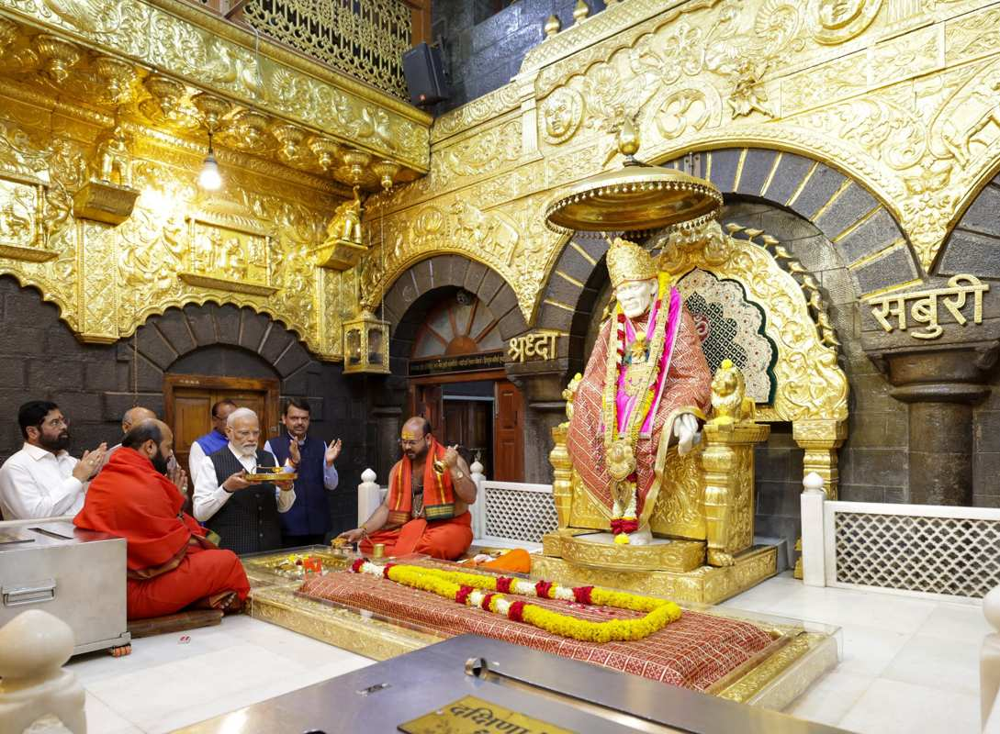

Sai Baba of Shirdi (c. 1838? – 15 October 1918), also known as Shirdi Sai Baba, was an Indian spiritual master and fakir, considered to be a saint, revered by both Hindu and Muslim devotees during and after his lifetime.Sai Baba condemned discrimination based on religion or caste. He had both Hindu and Muslim followers, but when pressed on his own religious affiliations, he refused to identify himself with one to the exclusion of the other. His teachings combined elements of Hinduism and Islam: he gave the Hindu name Dwarakamayi to the mosque in which he lived, practised both Hindu and Muslim rituals, and taught using words and figures that drew from both traditions. According to the Shri Sai Satcharita, a hagiography written shortly after his death, his Hindu devotees believed him to be an incarnation of the Hindu deity Dattatreya.